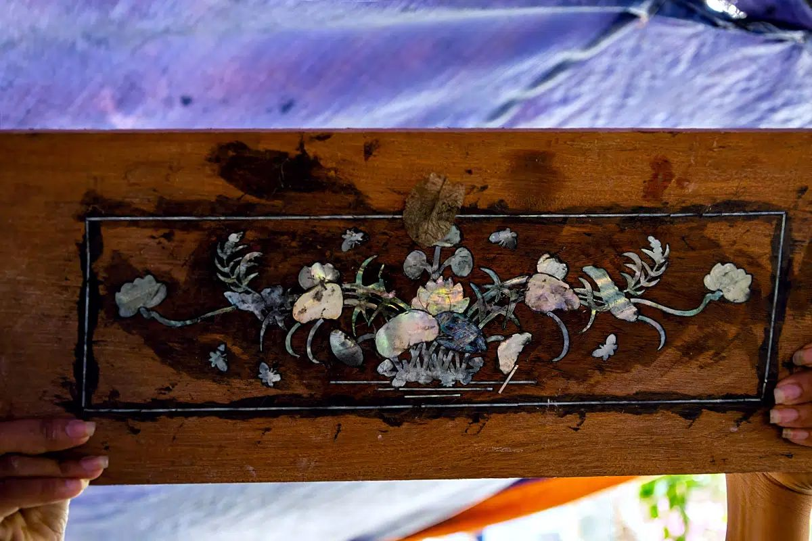
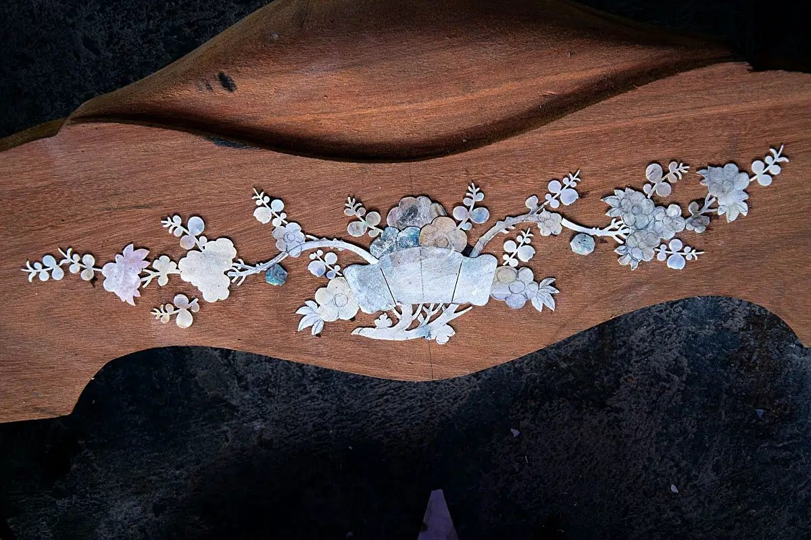
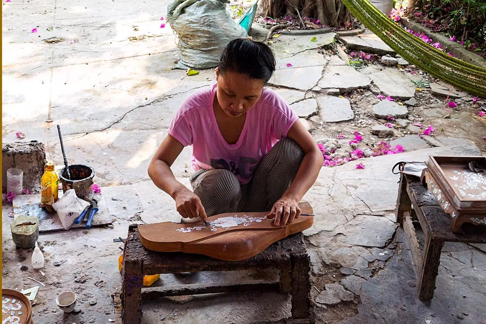
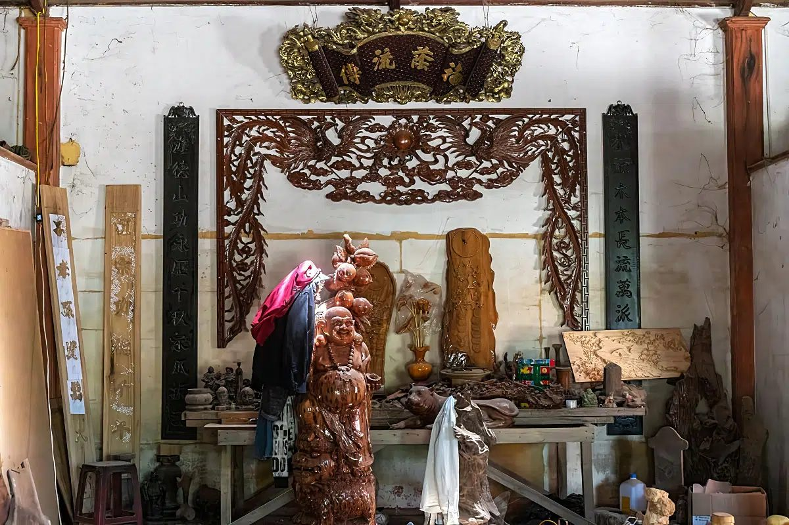
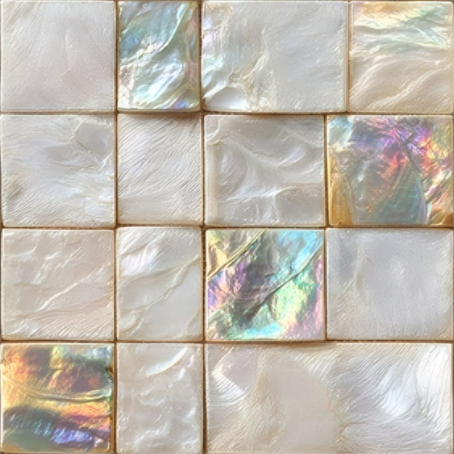
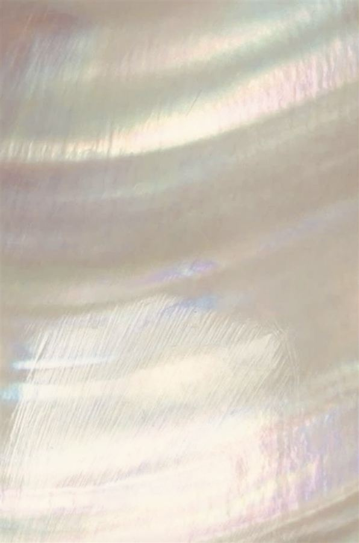
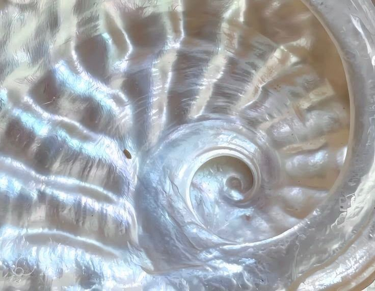
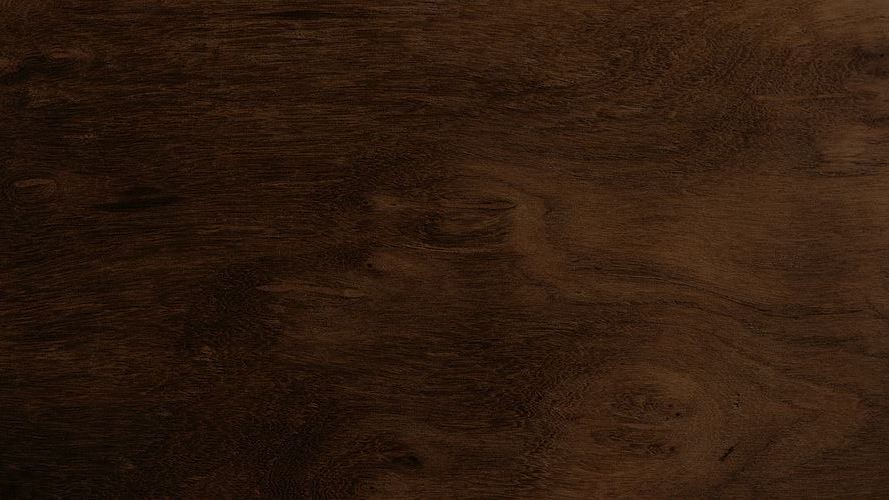
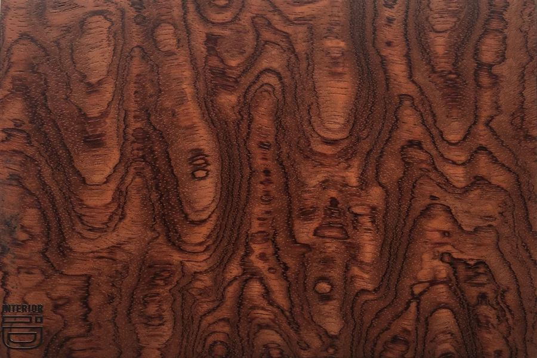

Câu chuyện nghề khảm
Một nghề thủ công cũ của người Việt, được đưa vào những món đồ nhỏ bạn dùng mỗi ngày.
Nghề khảm của người Việt
Khảm xà cừ, còn gọi là khảm trai, là kỹ thuật khoét rãnh trên mặt gỗ rồi gắn vào đó những mảnh vỏ trai, vỏ ốc đã cắt mài, để tạo thành hoa lá, chim muông hay chữ. Ở miền Bắc, nghề gắn với các làng nghề lâu đời, nổi tiếng nhất là làng Chuôn Ngọ (Phú Xuyên, Hà Nội).
Đồ khảm từng có mặt trong rất nhiều ngôi nhà Việt: bộ tràng kỷ, tủ chè, hoành phi câu đối, hộp đựng trầu. Nhưng những món đồ lớn ấy đắt, nặng và khó đặt vào căn phòng hôm nay, nên ngày càng ít người đặt làm, và ít người trẻ theo nghề.
Khảm bắt đầu từ một ý nghĩ đơn giản: nếu không đưa được chiếc tủ chè vào nhà người trẻ, hãy đưa nghề khảm vào chiếc lược, chiếc kẹp tóc họ cầm trên tay mỗi ngày.




Chất liệu
| Loại xà cừ | Dùng để |
|---|---|
| Vụn xà cừ | Rải nền, điểm chấm nhỏ như phấn hoa, hạt sương |
| Xà cừ cắt sẵn | Mảnh góc, xoắn ốc, mảnh ánh lửa cho cánh hoa và lá |
| Vỏ ốc nhỏ (~10 cm) | Cắt mảnh mỏng cho họa tiết trên kẹp tóc |
| Vỏ ốc trung (~15 cm) | Mảnh lớn, ít đường nối, dùng cho bông hoa chính |
| Vỏ ốc khảm xanh | Ánh xanh tím đậm, dành cho thiết kế riêng cao cấp |
| Nền | Đặc điểm |
|---|---|
| Gỗ mun | Đen, nặng, thớ mịn. Làm xà cừ nổi rõ nhất. |
| Gỗ hương | Đỏ nâu, có mùi thơm nhẹ, vân gỗ đẹp. |
| Gỗ bách | Vàng sáng, nhẹ, hợp với xà cừ hồng và tím. |
| Sơn mài | Phủ nhiều lớp trên cốt gỗ, mặt đen hoặc tím mận bóng sâu. |





Sáu bước chế tác
Chọn nguyên liệu
Xà cừ hợp pháp, rõ nguồn gốc. Phôi gỗ được làm sạch, phân loại, kiểm tra độ bền.
Thiết kế mẫu
Họa tiết di sản như sen, mai, mây cuộn được vẽ lại theo lối tối giản, vừa với dáng sản phẩm.
Tạo hình xà cừ
Cắt mài xà cừ thành mảnh nhỏ đúng bản vẽ để hoa văn khít khi ghép.
Khảm
Đục rãnh khảm âm trên gỗ, gắn từng mảnh, chèn keo sơn vào khe.
Hoàn thiện
Mài phẳng, đánh bóng, phủ lớp bảo vệ. Bo tròn mọi góc chạm vào da và tóc.
Kiểm tra và đóng gói
Kiểm từng món, đóng hộp giấy kèm thẻ kể ý nghĩa họa tiết.
Họa tiết và ý nghĩa
Món đồ khảm của riêng bạn
Chọn gỗ, họa tiết và màu xà cừ. Thợ khảm làm đúng bản thiết kế ấy trong 7–14 ngày.
Mở Studio